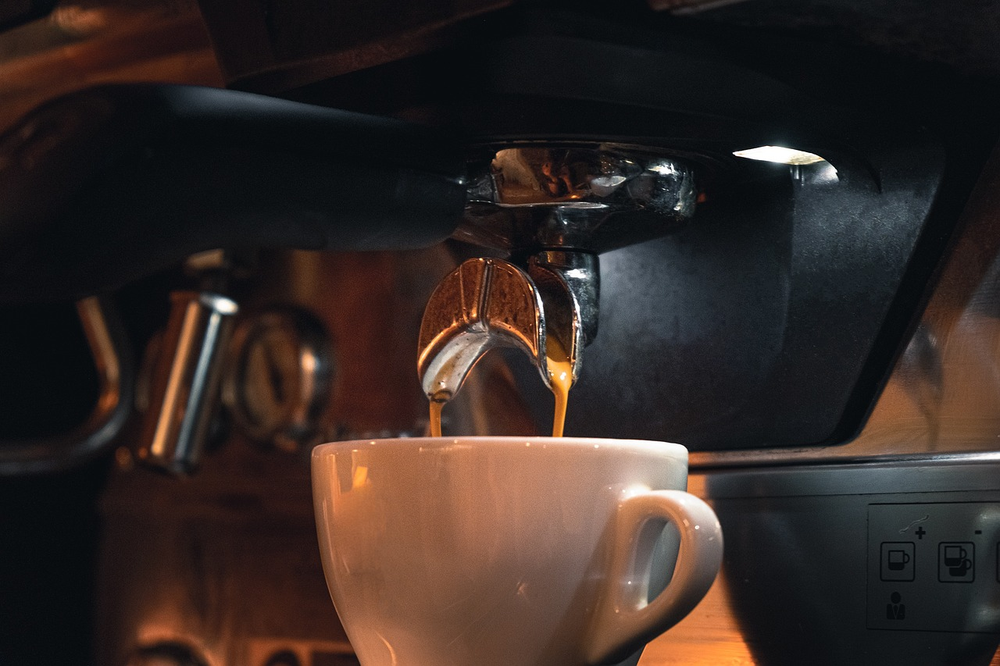

La Guía Definitiva de Cafeteras 2024
Publicado el: 21 de agosto de 2024
Categoría: Hogar
El café es mucho más que una simple bebida; es un ritual que nos acompaña en nuestro día a día. La elección de la cafetera adecuada puede marcar la diferencia entre una simple taza de café y una experiencia sensorial inolvidable. En esta guía completa, te ayudaremos a encontrar la cafetera perfecta para tus necesidades y preferencias.
El mercado de las cafeteras es amplio y variado, ofreciendo una amplia gama de opciones para todos los gustos y presupuestos. Desde las clásicas cafeteras de goteo hasta las sofisticadas máquinas de espresso, cada tipo de cafetera ofrece una experiencia única. En este artículo, exploraremos las características principales de cada tipo, analizaremos modelos específicos y te proporcionaremos consejos para elegir la cafetera ideal.
Cafeteras de Goteo
Las cafeteras de goteo son las más populares gracias a su sencillez de uso y su capacidad para preparar grandes cantidades de café de manera rápida. Son perfectas para el uso diario en hogares y oficinas.
Moccamaster KBG Select: La Perfección en Cada Taza
La Moccamaster KBG Select es la cafetera automática de referencia para los amantes del café que buscan una experiencia superior. Con su diseño innovador y su tecnología de precisión, esta cafetera garantiza una extracción óptima del café, liberando todo su aroma y sabor. Ya sea que prepares una jarra completa o solo unas pocas tazas, la KBG Select te ofrece un café de calidad profesional en la comodidad de tu hogar.

Moccamaster KBG Select
Descripción general: La Moccamaster KBG Select es la cafetera automática de referencia para los amantes del café que buscan una experiencia superior. Con su diseño innovador y su tecnología de precisión, esta cafetera garantiza una extracción óptima del café, liberando todo su aroma y sabor. Ya sea que prepares una jarra completa o solo unas pocas tazas, la KBG Select te ofrece un café de calidad profesional en la comodidad de tu hogar.
Características generales:
- Sistema de selección de cantidad: Permite preparar desde 2 hasta 10 tazas con una extracción perfecta en cada caso.
- Temperatura del agua precisa: Entre 92° y 96°C, ideal para extraer los mejores sabores del café.
- Brazo de salida de 9 agujeros: Garantiza una distribución uniforme del agua sobre el café molido.
- Placa calefactora independiente: Mantiene el café caliente a la temperatura ideal sin quemarlo.
- Diseño atemporal y sostenible: Fabricada con materiales de alta calidad y reciclables, sin BPA.
- Fácil de usar y limpiar: Con piezas desmontables y un diseño intuitivo.
- Rendimiento duradero: Construida para durar y ofrecer un café excepcional durante años.
Pros:
- Café de calidad superior: Extracción óptima, sabor pleno y aroma intenso.
- Versatilidad: Prepara la cantidad exacta de café que deseas.
- Fácil de usar: Ideal tanto para principiantes como para expertos.
- Diseño elegante y duradero: Un complemento perfecto para cualquier cocina.
- Marca reconocida: Moccamaster es sinónimo de calidad y fiabilidad.
Contras:
- Precio: Es una inversión mayor en comparación con otras cafeteras automáticas.
- Tamaño: Ocupa un poco más de espacio en la encimera.
¿Por qué elegir Moccamaster?
- Experiencia y tradición: Moccamaster lleva décadas fabricando cafeteras de alta calidad, y su reputación es inigualable.
- Tecnología de precisión: Cada detalle está diseñado para garantizar una extracción perfecta del café.
- Sostenibilidad: Al elegir Moccamaster, estás optando por un producto duradero y respetuoso con el medio ambiente.
- Satisfacción garantizada: Miles de amantes del café en todo el mundo confían en Moccamaster para disfrutar de su bebida favorita.
Melitta AromaFresh: Tu Aroma Mañanero Perfecto
La Melitta AromaFresh es una cafetera de goteo diseñada para los amantes del café que buscan una experiencia personalizada y aromática. Con su molinillo integrado, pantalla táctil y funciones programables, esta cafetera te permite disfrutar de una taza de café recién hecho y adaptado a tus gustos en cada ocasión.

Melitta AromaFresh
Descripción general: La Melitta AromaFresh es una cafetera de goteo diseñada para los amantes del café que buscan una experiencia personalizada y aromática. Con su molinillo integrado, pantalla táctil y funciones programables, esta cafetera te permite disfrutar de una taza de café recién hecho y adaptado a tus gustos en cada ocasión.
Características generales:
- Molinillo integrado: Muele los granos de café al instante para un aroma y sabor óptimos.
- Pantalla táctil: Control intuitivo de todas las funciones.
- Temporizador: Programa la preparación para despertar con el aroma del café recién hecho.
- Intensidad ajustable: Personaliza el sabor de tu café según tus preferencias.
- Protección antical: Prolonga la vida útil de tu cafetera.
- Diseño elegante: Combina estilo y funcionalidad.
Pros:
- Café personalizado: Ajusta la intensidad del café y la molienda según tus gustos.
- Comodidad: Programación fácil y función de mantener caliente.
- Versatilidad: Funciona con granos de café y café molido.
- Diseño moderno: Se adapta a cualquier cocina.
- Marca reconocida: Melitta es sinónimo de calidad y tradición en el mundo del café.
Contras:
- Precio: Puede ser más costosa que otras cafeteras de goteo.
- Tamaño: Ocupa un poco más de espacio en la encimera.
- Limpieza: Requiere una limpieza regular, especialmente el molinillo.
¿Por qué elegir Melitta AromaFresh?
- Café personalizado: Si buscas una cafetera que te ofrezca un café de alta calidad y una experiencia personalizada, la Melitta AromaFresh es una excelente opción. Su molinillo integrado garantiza un aroma intenso y fresco, mientras que sus funciones programables te permiten disfrutar de tu café a tu manera.
- Diseño elegante: Además, su diseño elegante y su fácil uso la convierten en una adición práctica y estética a cualquier cocina.
- Inversión en calidad: En resumen, la Melitta AromaFresh es una inversión para los amantes del café que buscan la perfección en cada taza. Si valoras la calidad, la personalización y la comodidad, esta cafetera te proporcionará una experiencia cafetera inigualable.
Melitta Look IV Therm Selection: Café Personalizado y Elegante
La Melitta Look IV Therm Selection es una cafetera de goteo diseñada para ofrecerte una experiencia de café personalizada y sin complicaciones. Con su innovador sistema AromaSelector®, podrás ajustar la intensidad de tu café con un simple gesto, garantizando que cada taza se adapte a tus preferencias.

Melitta Look IV Therm Selection
Descripción general: La Melitta Look IV Therm Selection es una cafetera de goteo diseñada para ofrecerte una experiencia de café personalizada y sin complicaciones. Con su innovador sistema AromaSelector®, podrás ajustar la intensidad de tu café con un simple gesto, garantizando que cada taza se adapte a tus preferencias.
Características generales:
- AromaSelector®: Ajusta la intensidad del café de suave a fuerte con un solo movimiento.
- Jarra térmica: Mantiene el café caliente durante horas y se sirve con una sola mano.
- Tapa de flujo directo: Permite que el café pase directamente a la jarra durante la preparación.
- Protección antical 3 en 1: Prolonga la vida útil de tu cafetera y garantiza un sabor óptimo.
- Portafiltros pivotante: Facilita la colocación y extracción del filtro.
- Sistema antigoteo: Evita derrames y manchas.
- Depósito de agua transparente: Con escala de fácil lectura.
- Apagado automático: Ahorra energía y previene accidentes.
Pros:
- Café personalizado: Disfruta de tu café con la intensidad que más te guste.
- Comodidad: Jarra térmica de fácil manejo y sistema antigoteo.
- Limpieza sencilla: Portafiltros extraíble y programa de descalcificación automático.
- Diseño elegante: Combina funcionalidad y estética.
- Durabilidad: Protección antical y materiales de alta calidad.
Contras:
- Capacidad: Ideal para hogares pequeños o medianos. No es la mejor opción si necesitas preparar grandes cantidades de café.
- Molinillo: No incluye molinillo integrado, por lo que debes moler el café por separado.
- Precio: Puede ser un poco más costosa que otras cafeteras de goteo básicas.
¿Por qué elegir Melitta Look IV Therm Selection?
- Café personalizado: Si valoras la capacidad de ajustar la intensidad del café para adaptarse a tus gustos, el sistema AromaSelector® te permitirá disfrutar de una experiencia de café a medida.
- Comodidad y diseño: Su jarra térmica y el sistema antigoteo proporcionan una experiencia cómoda y sin complicaciones, mientras que su diseño elegante se adapta a cualquier cocina.
- Durabilidad: La protección antical y la alta calidad de los materiales aseguran que esta cafetera te acompañará durante años.
Máquinas de Espresso
Las máquinas de espresso utilizan alta presión para extraer el café de los granos molidos, resultando en una bebida concentrada y aromática. Son ideales para los verdaderos amantes del espresso que buscan calidad en cada taza.
De'Longhi Magnifica S ECAM 22.110: Tu Barista Personal en Casa
La De'Longhi Magnifica S ECAM 22.110 es una cafetera superautomática diseñada para los amantes del café que buscan una experiencia barista en la comodidad de su hogar. Con su diseño elegante, funciones intuitivas y capacidad para preparar una amplia variedad de bebidas, esta cafetera se ha convertido en una de las favoritas de los consumidores.

De'Longhi Magnifica S ECAM 22.110
Descripción general: La De'Longhi Magnifica S ECAM 22.110 es una cafetera superautomática diseñada para los amantes del café que buscan una experiencia barista en la comodidad de su hogar. Con su diseño elegante, funciones intuitivas y capacidad para preparar una amplia variedad de bebidas, esta cafetera se ha convertido en una de las favoritas de los consumidores.
Características generales:
- Molinillo de conos: Muele los granos de café justo antes de la preparación para un aroma y sabor óptimos.
- Sistema Cappuccino: Crea una espuma de leche cremosa y suave para tus bebidas favoritas.
- Pantalla intuitiva: Permite personalizar tus bebidas y seleccionar tus preferencias.
- Depósito de agua de gran capacidad: Reduce la frecuencia de llenado.
- Programable: Guarda tus ajustes favoritos para una preparación rápida y sencilla.
- Limpieza automática: Facilita el mantenimiento de la cafetera.
Pros:
- Versatilidad: Prepara una amplia variedad de bebidas, desde espresso hasta cappuccino.
- Calidad del café: El molinillo de conos y el sistema Cappuccino garantizan un café de excelente sabor.
- Facilidad de uso: La pantalla intuitiva y los botones programables hacen que su uso sea sencillo.
- Diseño elegante: Combina funcionalidad y estética.
- Durabilidad: Construida con materiales de alta calidad para una larga vida útil.
Contras:
- Tamaño: Ocupa un espacio considerable en la encimera.
- Precio: Es una inversión significativa en comparación con otras cafeteras.
- Mantenimiento: Requiere una limpieza regular para garantizar su buen funcionamiento.
¿Por qué elegir De'Longhi Magnifica S ECAM 22.110?
- Experiencia de barista en casa: Si deseas disfrutar de café de alta calidad y diversas bebidas como un profesional, esta cafetera es ideal para ti.
- Facilidad de uso y personalización: La pantalla intuitiva y las funciones programables te permiten ajustar y guardar tus preferencias de café fácilmente.
- Diseño y durabilidad: Su elegante diseño y la calidad de los materiales aseguran una cafetera duradera y estéticamente agradable.
Sage The Barista Express: Tu Barista Personal en Casa
La Sage The Barista Express es una cafetera espresso de alta gama diseñada para los amantes del café que buscan una experiencia barista en la comodidad de su hogar. Con su molinillo integrado, control de temperatura preciso y sistema de espuma de leche manual, esta cafetera te permite preparar una amplia variedad de bebidas de café de especialidad.

Sage The Barista Express
Descripción general: La Sage The Barista Express es una cafetera espresso de alta gama diseñada para los amantes del café que buscan una experiencia barista en la comodidad de su hogar. Con su molinillo integrado, control de temperatura preciso y sistema de espuma de leche manual, esta cafetera te permite preparar una amplia variedad de bebidas de café de especialidad.
Características generales:
- Molinillo de muelas cónicas: Muele los granos de café justo antes de la extracción para un sabor óptimo.
- Control de temperatura PID: Garantiza una temperatura del agua precisa para una extracción perfecta.
- Preinfusión: Realiza una preinfusión a baja presión para extraer todos los sabores del café.
- Espumador de leche manual: Crea una microespuma de leche cremosa y suave para tus bebidas.
- Portafiltro de 54 mm: Compatible con filtros presurizados y no presurizados.
- Dosing Funnel: Facilita la dosificación del café molido.
Pros:
- Versatilidad: Prepara una amplia variedad de bebidas, desde espresso hasta latte art.
- Calidad del café: El molinillo de muelas cónicas y el control de temperatura preciso garantizan un café de excelente sabor.
- Control total: Permite personalizar cada aspecto de la preparación del café.
- Diseño elegante: Combina funcionalidad y estética.
- Durabilidad: Construida con materiales de alta calidad.
Contras:
- Precio: Es una inversión significativa.
- Tamaño: Ocupa un espacio considerable en la encimera.
- Curva de aprendizaje: Requiere un poco de práctica para dominar todas sus funciones.
¿Por qué elegir Sage The Barista Express?
- Experiencia barista en casa: Si buscas experimentar con diferentes perfiles de café y crear bebidas personalizadas, esta cafetera te ofrece todas las herramientas necesarias.
- Tecnología avanzada: El molinillo de muelas cónicas y el control de temperatura PID aseguran un café de calidad superior.
- Diseño robusto y elegante: Su diseño combina funcionalidad con una estética moderna y duradera.
Breville Barista Max: Tu Barista Personal en Casa
La Breville Barista Max es una cafetera espresso de alta gama diseñada para aquellos que buscan una experiencia de café de calidad profesional en la comodidad de su hogar. Con su molinillo integrado, control de temperatura preciso y vaporizador de leche de alta calidad, esta máquina te permite preparar una amplia variedad de bebidas de café personalizadas.

Breville Barista Max
Descripción general: La Breville Barista Max es una cafetera espresso de alta gama diseñada para aquellos que buscan una experiencia de café de calidad profesional en la comodidad de su hogar. Con su molinillo integrado, control de temperatura preciso y vaporizador de leche de alta calidad, esta máquina te permite preparar una amplia variedad de bebidas de café personalizadas.
Características generales:
- Molinillo de café integrado: Muele los granos de café justo antes de la extracción para un sabor óptimo.
- Sistema Temp IQ Shot Control: Garantiza una temperatura del agua precisa y una infusión previa para un sabor equilibrado.
- Vaporizador de leche de alta calidad: Crea una microespuma de leche cremosa y suave para tus bebidas.
- Portafiltro de 58 mm: Compatible con filtros de pared simple para una o dos dosis.
- Control de dosis: Permite personalizar la cantidad de café molido y de agua.
- Diseño elegante: Combina funcionalidad y estética.
Pros:
- Versatilidad: Prepara una amplia variedad de bebidas, desde espresso hasta latte art.
- Calidad del café: El molinillo de café integrado y el sistema Temp IQ Shot Control garantizan un café de excelente sabor.
- Control total: Permite personalizar cada aspecto de la preparación del café.
- Diseño elegante: Combina funcionalidad y estética.
- Durabilidad: Construida con materiales de alta calidad.
Contras:
- Precio: Es una inversión significativa.
- Tamaño: Ocupa un espacio considerable en la encimera.
- Curva de aprendizaje: Requiere un poco de práctica para dominar todas sus funciones.
¿Por qué elegir Breville Barista Max?
- Experiencia profesional en casa: Con la Breville Barista Max, puedes disfrutar de la calidad de un café profesional en tu propia cocina.
- Tecnología avanzada: El molinillo integrado y el sistema Temp IQ Shot Control aseguran un sabor óptimo y una preparación consistente.
- Diseño sofisticado: Su estética elegante y robusta añade un toque de distinción a tu cocina.
Cafeteras de Cápsulas
Las cafeteras de cápsulas ofrecen una forma rápida y fácil de preparar una variedad de bebidas. Son ideales para quienes buscan conveniencia sin comprometer el sabor.
Nespresso Lattissima One: Café con leche de calidad en casa
La Nespresso Lattissima One es una cafetera de cápsulas diseñada para ofrecer una experiencia de café con leche fácil y rápida. Con su espumador de leche integrado, esta máquina te permite preparar tus bebidas favoritas con solo presionar un botón.

Nespresso Lattissima One
Descripción general: La Nespresso Lattissima One es una cafetera de cápsulas diseñada para ofrecer una experiencia de café con leche fácil y rápida. Con su espumador de leche integrado, esta máquina te permite preparar tus bebidas favoritas con solo presionar un botón.
Características generales:
- Espumador de leche integrado: Crea una espuma de leche cremosa y suave para tus cappuccinos y lattes.
- Diseño compacto y elegante: Se adapta a cualquier cocina.
- Facilidad de uso: Interfaz simple con tres botones para diferentes bebidas.
- Calentamiento rápido: Lista para usar en pocos segundos.
- Depósito de agua extraíble: Fácil de llenar y limpiar.
- Cápsulas Nespresso: Amplia variedad de sabores y aromas.
Pros:
- Café con leche perfecto: Prepara cappuccinos y lattes con una sola pulsación.
- Diseño compacto y elegante: Se adapta a cualquier cocina.
- Fácil de usar: Ideal para usuarios que buscan una máquina sencilla.
- Limpieza sencilla: Piezas extraíbles aptas para lavavajillas.
Contras:
- Capacidad limitada del recipiente de leche: Ideal para una o dos personas.
- Cantidad de espuma no ajustable: La espuma puede ser excesiva para algunos gustos.
- Precio: Más elevado que otros modelos de entrada de gama sin espumador de leche.
- Calidad del café: No alcanza la calidad de una máquina de espresso manual.
- Cápsulas desechables: Generan residuos y aumentan los costos a largo plazo.
¿Por qué elegir la Nespresso Lattissima One?
- Experiencia rápida y fácil: La Lattissima One permite preparar café con leche con solo presionar un botón, ideal para quienes buscan conveniencia.
- Diseño compacto: Su tamaño reducido y elegante se adapta perfectamente a cualquier cocina sin ocupar mucho espacio.
- Calidad en cada taza: Aunque es una máquina de cápsulas, su espumador de leche garantiza una experiencia de café con leche satisfactoria.
Lavazza Classy Mini LB300: Café de calidad en un formato compacto
La Lavazza Classy Mini LB300 es una cafetera de cápsulas diseñada para ofrecer una experiencia de café rápida y sencilla. Con su tamaño compacto y su diseño elegante, es perfecta para hogares, oficinas y espacios pequeños.

Lavazza Classy Mini LB300
Descripción general: La Lavazza Classy Mini LB300 es una cafetera de cápsulas diseñada para ofrecer una experiencia de café rápida y sencilla. Con su tamaño compacto y su diseño elegante, es perfecta para hogares, oficinas y espacios pequeños.
Características generales:
- Cápsulas Lavazza Blue: Compatible con una amplia variedad de sabores y intensidades.
- Diseño compacto: Ideal para espacios reducidos.
- Facilidad de uso: Botones táctiles intuitivos y dos selecciones de café preestablecidas.
- Calentamiento rápido: Lista para usar en pocos segundos.
- Depósito de agua transparente: Fácil de llenar y monitorizar.
- Soporte de taza ajustable: Se adapta a diferentes tamaños de tazas.
Pros:
- Compacta y elegante: Se adapta a cualquier entorno.
- Fácil de usar: Perfecta para el día a día.
- Calentamiento rápido: Disfruta de tu café al instante.
- Cápsulas de alta calidad: Lavazza ofrece una amplia variedad de sabores.
- Precio accesible: Opción económica dentro de las cafeteras de cápsulas.
Contras:
- Cápsulas desechables: Generan residuos y aumentan los costos a largo plazo.
- Capacidad limitada del depósito de agua y del contenedor de cápsulas: Ideal para un uso individual o en pequeñas oficinas.
- Poca personalización: Solo dos selecciones de café preestablecidas.
- No incluye espumador de leche: Si buscas preparar cappuccinos o lattes, necesitarás adquirir uno por separado.
¿Por qué elegir la Lavazza Classy Mini LB300?
- Diseño compacto y elegante: La Classy Mini LB300 es perfecta para espacios reducidos sin sacrificar el estilo.
- Fácil de usar: Ideal para quienes buscan una solución rápida y sencilla para preparar café de calidad.
- Variedad de cápsulas: La amplia gama de cápsulas Lavazza Blue te permite disfrutar de diferentes sabores y estilos de café.
Nespresso Dolce Gusto Piccolo XS: Compacta y versátil
La Nescafé Dolce Gusto Piccolo XS es una cafetera de cápsulas diseñada para ofrecer una experiencia de café rápida y sencilla en un tamaño compacto. Con su diseño moderno y su funcionamiento intuitivo, esta máquina te permite disfrutar de una amplia variedad de bebidas calientes y frías en la comodidad de tu hogar.

Nespresso Dolce Gusto Piccolo XS
Descripción general: La Nescafé Dolce Gusto Piccolo XS es una cafetera de cápsulas diseñada para ofrecer una experiencia de café rápida y sencilla en un tamaño compacto. Con su diseño moderno y su funcionamiento intuitivo, esta máquina te permite disfrutar de una amplia variedad de bebidas calientes y frías en la comodidad de tu hogar.
Características generales:
- Diseño compacto: Ideal para espacios reducidos.
- Sistema de alta presión: Extrae todo el aroma y sabor de las cápsulas.
- Cápsulas inteligentes: Ajusta automáticamente la presión para cada bebida.
- Variedad de bebidas: Café, cappuccino, latte, chocolate caliente y más.
- Modo eco: Ahorra energía al apagarse automáticamente.
- Soporte de taza ajustable: Se adapta a diferentes tamaños de tazas.
Pros:
- Compacta y elegante: Se adapta a cualquier cocina.
- Fácil de usar: Interfaz sencilla y funcionamiento intuitivo.
- Variedad de bebidas: Amplia gama de sabores y estilos.
- Calentamiento rápido: Lista para usar en pocos segundos.
- Modo eco: Contribuye al ahorro de energía.
- Precio accesible: Opción económica dentro de las cafeteras de cápsulas.
Contras:
- Cápsulas desechables: Generan residuos y aumentan los costos a largo plazo.
- Capacidad limitada del depósito de agua: Ideal para un uso individual o en pequeñas oficinas.
- No incluye espumador de leche manual: Para una espuma más personalizada, necesitarás uno adicional.
- Menos personalizable que otros modelos: No ofrece tantas opciones de personalización como otras cafeteras de cápsulas.
¿Por qué elegir la Nespresso Dolce Gusto Piccolo XS?
- Diseño compacto: Perfecta para espacios reducidos y entornos con poco espacio.
- Fácil funcionamiento: Ideal para quienes buscan una máquina sencilla para preparar una variedad de bebidas con poco esfuerzo.
- Sistema de alta presión: Asegura una extracción óptima de las cápsulas, garantizando una buena calidad de café.
Cafeteras de Filtrado
Las cafeteras de filtrado manual permiten un mayor control sobre el proceso de extracción. Son ideales para quienes desean una experiencia personalizada en la preparación de café, con opciones que van desde la simplicidad hasta técnicas más avanzadas.
Chemex: El ícono del café de filtro
La Chemex es una cafetera de filtro manual reconocida por su diseño elegante y su capacidad para producir un café limpio y saboroso. Su forma de reloj de arena y su construcción en vidrio de borosilicato la convierten en un objeto de deseo para los amantes del café.

Chemex CM-6A
Descripción general: La Chemex es una cafetera de filtro manual reconocida por su diseño elegante y su capacidad para producir un café limpio y saboroso. Su forma de reloj de arena y su construcción en vidrio de borosilicato la convierten en un objeto de deseo para los amantes del café.
Características generales:
- Diseño icónico: Forma de reloj de arena y materiales de alta calidad.
- Control total: Permite un control exhaustivo del proceso de extracción.
- Café de alta calidad: Produce un café limpio y saboroso.
- Versátil: Permite preparar diferentes tamaños de café.
- Fácil de limpiar: El vidrio de borosilicato es fácil de mantener.
Pros:
- Café de excelente calidad: El control manual y los filtros de papel de alta calidad permiten obtener un café con un sabor limpio y equilibrado.
- Diseño elegante: La Chemex es una pieza de arte funcional que puede decorar cualquier cocina.
- Versátil: Permite preparar diferentes tipos de café, desde un espresso largo hasta un café con leche.
- Durabilidad: El vidrio de borosilicato es resistente al calor y a los cambios de temperatura.
- Experiencia sensorial: El proceso de preparación del café es una experiencia en sí misma.
Contras:
- Precio: Es una inversión significativa en comparación con otras cafeteras.
- Curva de aprendizaje: Requiere práctica para dominar la técnica de vertido.
- Fragilidad: El vidrio de borosilicato puede romperse si se golpea o se cae.
- Limpieza: Requiere un cuidado especial para evitar rayar el vidrio.
- Filtros adicionales: Es necesario comprar filtros de papel específicos para Chemex.
¿Por qué elegir una Chemex?
- Experiencia artesanal: Si eres un amante del café que busca una experiencia de preparación artesanal y un café de alta calidad.
- Diseño icónico: Su diseño elegante y funcional hace que cada taza de café sea especial.
- Calidad del café: La capacidad de controlar el proceso de extracción te permite obtener un café limpio y bien equilibrado.
Hario V60: La reina del café de filtro manual
La Hario V60 es una cafetera de filtro manual muy popular entre los amantes del café de especialidad. Su diseño sencillo y efectivo permite extraer lo mejor de cada grano de café, ofreciendo una taza limpia y aromática.

Hario V60
Descripción general: La Hario V60 es una cafetera de filtro manual muy popular entre los amantes del café de especialidad. Su diseño sencillo y efectivo permite extraer lo mejor de cada grano de café, ofreciendo una taza limpia y aromática.
Características generales:
- Diseño cónico: El ángulo de 60 grados optimiza el flujo del agua y la extracción del café.
- Material transparente: Permite observar el proceso de filtrado.
- Ligera y resistente: Ideal para llevar de viaje.
- Fácil de usar: Perfecta para principiantes y expertos.
- Versátil: Permite experimentar con diferentes variables para personalizar tu café.
Pros:
- Café de alta calidad: Extrae un café limpio, con cuerpo y sabores delicados.
- Control total: Permite ajustar variables como la molienda, la temperatura del agua y el tiempo de extracción.
- Experiencia sensorial: El proceso de preparación es una experiencia en sí misma.
- Versátil: Ideal para preparar diferentes tipos de café, desde un café ligero hasta uno más intenso.
- Fácil de limpiar: Se desmonta fácilmente para una limpieza rápida.
- Precio accesible: Es una opción económica dentro de las cafeteras de filtro manuales.
Contras:
- Curva de aprendizaje: Requiere práctica para dominar la técnica de vertido.
- Fragilidad: El vidrio puede romperse si se golpea o se cae.
- Filtros adicionales: Es necesario comprar filtros de papel específicos para V60.
- No es automática: Requiere atención durante el proceso de preparación.
¿Por qué elegir una Hario V60?
- Calidad del café: Si buscas una cafetera que te permita preparar un café de alta calidad en casa y disfrutar del proceso de preparación.
- Diseño efectivo: Su diseño sencillo y su capacidad de ajuste permiten obtener una taza de café limpia y aromática.
- Versatilidad: La capacidad de experimentar con diferentes variables hace que sea una herramienta esencial para los amantes del café.
Aeropress: Versatilidad y portabilidad en una sola cafetera
La Aeropress es una cafetera manual que ha revolucionado la forma de preparar café en casa. Su diseño simple y portátil, combinado con su versatilidad, la han convertido en una favorita entre los amantes del café.

Aeropress
Descripción general: La Aeropress es una cafetera manual que ha revolucionado la forma de preparar café en casa. Su diseño simple y portátil, combinado con su versatilidad, la han convertido en una favorita entre los amantes del café.
Características generales:
- Diseño compacto y portátil: Perfecta para llevar de viaje o a la oficina.
- Materiales de alta calidad: Libre de BPA y fácil de limpiar.
- Preparación rápida: El proceso de extracción es rápido y sencillo.
- Versátil: Permite una gran variedad de métodos de preparación.
- Fácil de limpiar: Se desarma completamente para una limpieza sencilla.
Pros:
- Café de alta calidad: Permite extraer un café con cuerpo y sabor intenso.
- Versátil: Permite experimentar con diferentes recetas y técnicas.
- Rápida y fácil de usar: Ideal para preparar un café rápido en cualquier momento.
- Portátil: Perfecta para llevar de viaje o a la oficina.
- Precio accesible: Es una opción económica dentro de las cafeteras manuales.
Contras:
- Curva de aprendizaje: Requiere práctica para dominar las diferentes técnicas de preparación.
- Capacidad limitada: Ideal para una o dos personas.
- Limpieza: Requiere limpiar varias piezas después de cada uso.
- Filtros adicionales: Es necesario comprar filtros de papel específicos para Aeropress.
¿Por qué elegir una Aeropress?
- Versatilidad: Si buscas una cafetera que te permita preparar un café de alta calidad en casa o en cualquier lugar.
- Portabilidad: Su diseño compacto y ligero la convierte en una opción ideal para llevar contigo.
- Personalización: La capacidad de experimentar con diferentes métodos de preparación hace que sea una herramienta esencial para los amantes del café.
Nuestro ranking: Las mejores cafeteras según ReviZoom
Conclusión
La elección de una cafetera es una inversión en tu experiencia diaria. Con tantas opciones disponibles, es importante considerar tus gustos y necesidades personales para encontrar la que mejor se adapte a ti. Ya sea que busques un café rápido y sencillo o un ritual matutino personalizado, la cafetera ideal te permitirá disfrutar de tu bebida favorita de una manera más satisfactoria. ¡Explora las diferentes opciones, compara precios y, sobre todo, diviértete en el proceso! Recuerda que un buen café es el comienzo perfecto para cualquier día.